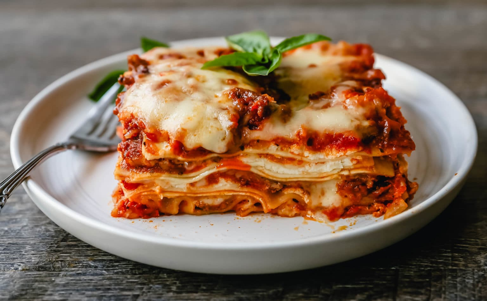

Lasagna

Description
Lasagna is a wide, flat sheet of pasta. Lasagna can refer to either the type of noodle or to the typical lasagna dish which is a dish made with several layers of lasagna sheets with sauce and other ingredients, such as meats and cheese, in between the lasagna noodles.
Ingredients
- Meat
- Onion
- Crushed Tomatoes
- Sugar
- Spices
- Lasagna sheets
- Cheese
Steps
- In a large pan, heat the olive oil over a low heat. Fry the onion, carrot, celery and garlic for 5 mins, or until softened. Add the mince and fry on a medium heat until golden. Turn up the heat, pour in the wine and bubble until reduced. Stir in the tomato purée, chopped tomatoes and stock. Add in the Worcestershire sauce and simmer for 15 mins, or until the liquid has reduced. Season.
- Meanwhile, make the white sauce. Melt the butter in a small saucepan over a low heat and add the flour. Whisk until combined and cook on low for 1-2 mins. Remove from the heat and gradually whisk in the milk until you have a loose sauce. Season. Return to a gentle heat and whisk constantly until the sauce thickens.
- Preheat the oven to gas 6, 200°C, fan 180°C. Layer up the lasagne in a baking dish, starting with a third each of the ragu, then the pasta, then the white sauce. Repeat twice. Top with the Parmesan and mozzarella then bake in the oven for 40-45 mins, until piping hot and crisp and bubbling on top. Serve immediately.
Back to homepage